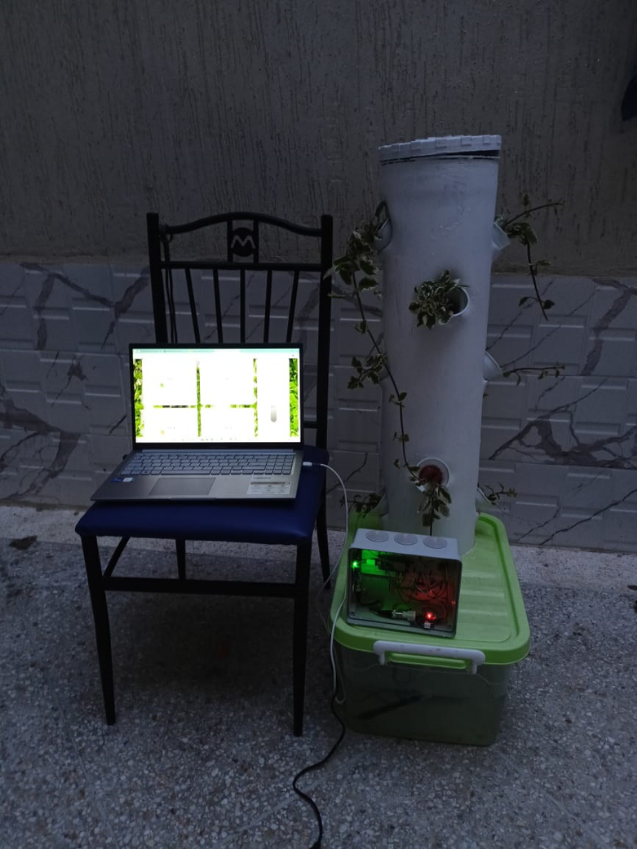
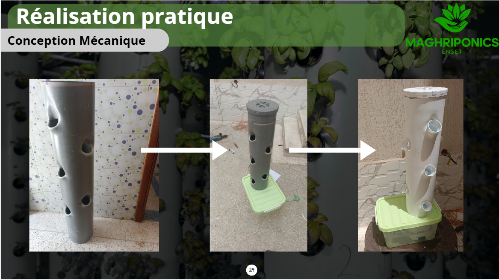
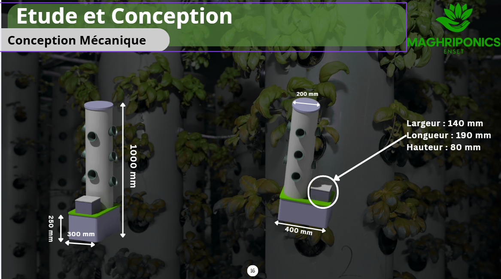
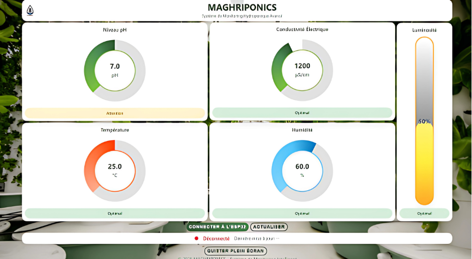
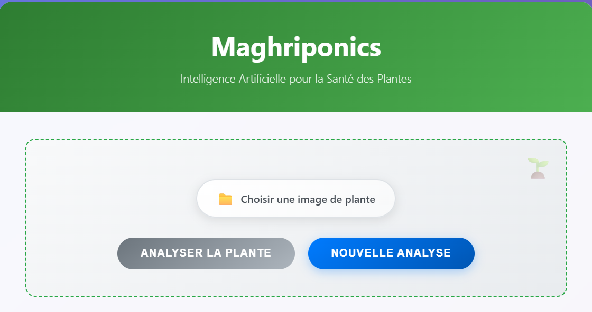
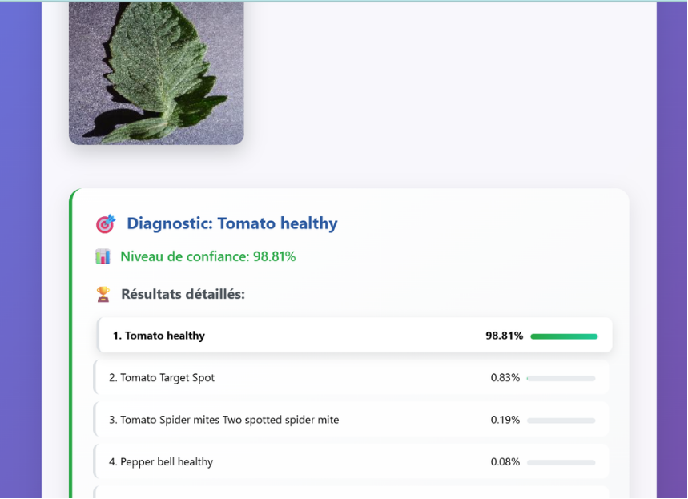

Conception, dimensionnement énergétique et intégration IA d'une tour aéroponique autonome
Face à la pression démographique croissante au Maroc (36,8 millions d'habitants en 2024) et à la baisse marquée des précipitations annuelles (passées de 340 mm en 2014 à 115 mm en 2022), l'agriculture conventionnelle montre ses limites. Avec mon équipe, nous avons conçu Maghriponics, un système d'agriculture hors-sol automatisé basé sur l'aéroponie : les racines des plantes sont suspendues dans l'air et brumisées régulièrement avec une solution nutritive, ce qui réduit la consommation d'eau jusqu'à 90 % par rapport à une culture traditionnelle.
Mon rôle dans l'équipe a porté sur la partie énergie et électrotechnique : le dimensionnement complet de l'installation photovoltaïque autonome destinée à alimenter le système, ainsi que la contribution à l'architecture électronique du prototype (capteurs, protections, régulation).
Le système repose sur un microcontrôleur ESP32 qui collecte en continu les données environnementales, les diffuse en JSON via un serveur HTTP local, et pilote les actionneurs en fonction de seuils définis pour chaque paramètre (optimal / attention / critique).
ESP32-S3-WROOM-1, interface USB-série CH340/CP2102, régulation 5V → 3.3V
pH, EC (conductivité), BME280 (température/humidité), LDR (luminosité), niveau d'eau
Pompe submersible, électrovannes (nutriments / acide phosphorique), LEDs horticoles, 3 relais protégés (diode + optocoupleur ULN2003)
Installation PV autonome, onduleur hybride, transformateur 230V→12V, batteries LiFePO4
CNN personnalisé "PlantDiseaseNet" (PyTorch) pour la détection de maladies foliaires
Frontend HTML/CSS/JS + backend Flask (app.py / predict.py)
J'ai réalisé le dimensionnement complet d'une installation PV autonome pour alimenter 123 tours de culture (besoin estimé à 0,795 kWh/tour/jour, soit 97,8 kWh/jour au total), avec 6h d'autonomie sur batteries.
La tour aéroponique a été construite à partir d'un tube PVC de 20 cm de diamètre et 1 m de haut, percé à intervalles réguliers pour accueillir les coupelles des plantes. Un tube interne relié à une pompe submersible pulvérise la solution nutritive vers les racines, en circuit fermé avec récupération et filtration de l'eau dans un réservoir.
Côté électronique, j'ai contribué à la conception du circuit autour de l'ESP32 : ponts diviseurs de tension pour les capteurs analogiques (pH, LDR), interface USB-série, régulation 3.3V, et pilotage de 3 relais de puissance (électrovannes + pompe) protégés par diodes de roue libre et optocoupleurs.
Une fonctionnalité clé du projet est la détection précoce des maladies des plantes. Plutôt que d'utiliser un modèle pré-entraîné, l'équipe a développé un CNN personnalisé — PlantDiseaseNet — avec PyTorch, entraîné sur le dataset PlantVillage pour reconnaître jusqu'à 38 maladies foliaires.
predict.py (prédiction en ligne de commande) et app.py (interface web Flask pour uploader une image et obtenir un diagnostic)Faute de temps pour intégrer une caméra ESP32-CAM embarquée dans cette première version, le diagnostic se fait via l'interface web : l'utilisateur charge une photo de feuille et obtient la classe prédite avec un score de confiance.






Suivi en temps réel de la température ambiante affichée sur l'interface mobile.
Relevé de la température ambiante en direct depuis le téléphone.